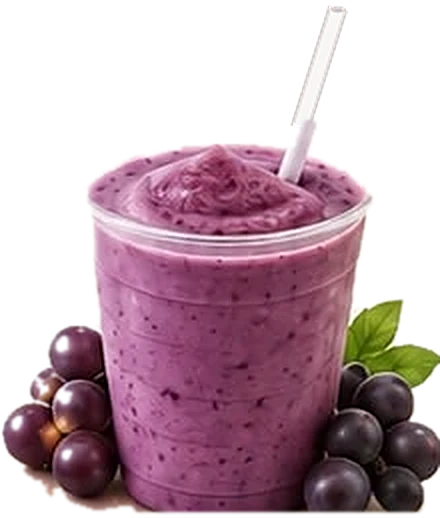
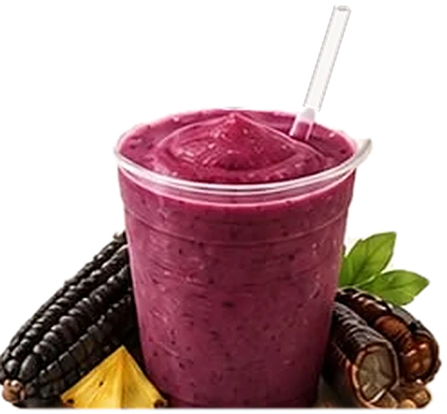
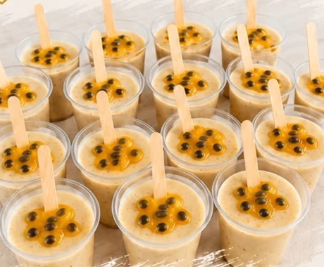
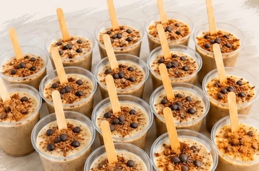

Cremoladas de fruta de verdad
Artesanales, hechas en Chiclayo. Arma tu pedido y lo recibes por WhatsApp.

- Fruta natural
- Sin colorantes ni saborizantes artificiales
- Delivery en Chiclayo desde 3 litros
Sabores que enamoran, momentos que quedan
Elige un sabor o combina los que desees. Preparamos cada cremolada con fruta natural.
Uva
Piña golden
Maracuyá
Tamarindo

Chicha morada
Maracumango: agotado por ahora
Escoge tu tamaño
8 onzasS/ 6.00≈ 240 ml
16 onzasS/ 10.00≈ 470 ml
32 onzasS/ 18.00≈ 950 ml
Yogur natural frutado
Cremoso, natural y con fruta. Elige tu sabor favorito.
- Piña
- Fresa
- Maracumango
- Higo
- Durazno
- Pasas y guindones
- Uva y arándano
- Chía y linaza
Sabores según nuestra publicación de Facebook; la disponibilidad se confirma por WhatsApp.
Chupetes especiales
Cremosos, en vasito con palito. Ideales para compartir o regalar.

Clásicos
S/ 2.00- Fresa
- Coco
- Maní
- Lúcuma
- Choco Oreo

Premium
S/ 3.00- Piña colada
- Ron con pasas
- Pie de limón
- Tres leches
- Cóctel de lúcuma
Los sabores con licor son solo para mayores de 18 años.
Arma tu pedido y envíalo por WhatsApp
Pedidos solo para Chiclayo. Delivery desde 3 litros en cremoladas; por debajo de eso, recoges en nuestro punto.
Tu pedido
Tus datos
Marca tu ubicación exacta en el mapa
Toca el mapa o arrastra el pin hasta tu puerta. Así el repartidor llega más rápido.
Visítanos en Chiclayo
Dónde estamos
Pasaje Agustín Arbulu Neyra #161,Chiclayo, Lambayeque
Delivery en
- Chiclayo
- José Leonardo Ortiz
- La Victoria
Delivery por compras desde 3 litros. Horario y disponibilidad: consúltalos por WhatsApp.
Cómo llegarLo que dicen nuestros clientes
Aún no tenemos calificación en línea
Si ya probaste Tropik, cuéntanos cómo te fue. Tu reseña ayuda a que más personas en Chiclayo nos encuentren.
“Doy fe que son las mejores.”
“Me encantó tu presentación de los chupetes y el sabor riquísimo.”
“Ya lo recibí, muchas gracias. Está muy rico.”
“Estuvieron deliciosísimos.”